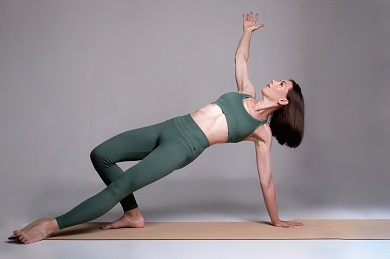
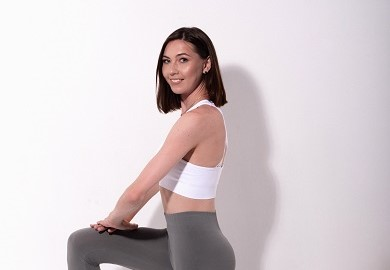
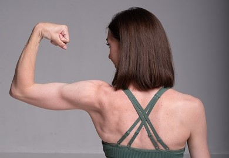
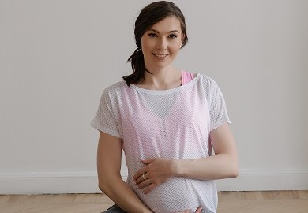

- онлайн встреча 20-30 минут - Сбор анамнеза, обсуждение
симптомов, запрос - Индивидуальная диагностика осанки, дыхания,
движения - Составление плана действий

Групповые тренировки
Групповые тренировки
- составление группового тренировочного плана - Рекомендации по
бытовым привычкам, самостоятельным занятиям - Проверка техники -
Продолжительность 35-40 минут - Запись занятия

Персональные тренировки
Персональные тренировки
- составление индивидуального тренировочного плана под Ваш
запрос - Рекомендации по бытовым привычкам, самостоятельным
занятиям - Проверка техники - Продолжительность 35-40 минут -
Запись занятия

Детокс марафон
Детокс марафон
Программа очищение направлена на очищение от токсинов, вредных
веществ наших "фильтров" организма: кишечник, печень, почки.
Симптомы: - состояние кожи (тусклый цвет, сухость, высыпания,
потеря эластичности, усиление процессов окисления, а значит
преждевременное старение) - Ломкие, сухие, секущиеся волосы
(ногти) - Вздутия, тяжесть, проблемы аппетита - Запоры -
снижение защитной функции организма (иммунитет) Если вы хотите:
- снизить вес - найти причины пищевых зависимостей -
сформировать новое пищевое поведение - наладить работу ЖКТ -
Уйти от перекусов - чувствовать легкость и свободу от еды
Приглашаю на детокс-марафон. Внедрив это в свою жизнь результат
останется с нами надолго 💯 Программа марафона: - сопровождение
нутрициолога (план и правила питания, примеры готовых блюд) -
силовые тренировки - работа с тазовым дном - работа с
психотерапевтом - чат поддержки - обратная связь от
специалистов Если есть воспаления в кишечнике, излишний
бактериальный/грибковый рост, витамины и минералы усваиваться
будут плохо. Нет смысла тратить кучу денег в аптеке! сначала
лучше поработать с кишечником. А уже здоровый микробиом
наполнять витаминами, микроэлементами. Вход через кейс
продуктов-помощников. Цена индивидуальная. Свяжись со мной,
чтобы узнать подробности.

Курс для беременных
Курс для беременных
Курс-конструктор для будущих мам с разным уровнем подготовки.
Программа: Обучающее видео по дыханию; 4 зарядки до 10 минут: -
3Д разминка: позвоночник и ТБС - активная зарядка - Разминка для
ленивых (9 минут) - Разминка на фитболе (9 минут) 9
разнонаправленных тренировок от 15 до 27 минут: - Комплекс Кошка
- работа с осанкой - Тренировка малой интенсивности на коврике -
Мобильный таз - Руки и грудной отдел с эластичной лентой -
Силовая тренировка на все тело с ремнем - Стопы с теннисным
(массажным) мячом - Тренировка ног и ягодиц со стулом -
тренировка с фитболом на все тело - Тренировка средней
интенсивности на все тело 4 урока по работе мышц тазового дна в
движении с акцентом на костные ориентиры В зависимости от
самочувствия можно комбинировать зарядка+тренировка, можно
выполнять отдельно. Есть противопоказания! Связаться, чтобы
узнать подробности.
Экспресс-пресс за 6 недель
Экспресс-пресс за 6 недель
Интенсив "6 недель" Тариф 1: "Общий" - 18 основных тренировок по
20-25 минут с акцентом на мышцы живота, (включаем поперечную
мышцу живота, учимся контролировать диастаз) - 7 дополнительных
блоков: • скорая помощь при болях в пояснице, крестце • МФР с
массажными мячами (снимаем напряжение в грудной клетке, шее,
плечах, избавляемся от тазовых болей) • дыхание и диафрагма
(улучшаем грудное дыхание, движение и положение грудной клетки,
улучшаем согласование грудной клетки и таза) • работа с
перекосами таза (сбалансируем положение таза) • динамическая
растяжка (улучшаем гибкость безопасно для мышц, связок) • отеки
(практика для быстрого снятия отеков с области лица) • силовая
(добавим нагрузку на 5 и 6 неделе курса) - упражнения Кегеля, -
пятиминутки - ответы на вопросы в общем чате - еженедельная
проверка техники - мотивация и поддержка в чате Доступ 6 недель
+ 6 недель после окончания Тариф 2 "Индивидуальный" - все, что
на тарифе 1 - личный чат со мной - ежедневная мотивация в
удобном для вас формате - индивидуальная диагностика перед
курсом + рекомендации - еженедельная персональная онлайн
тренировка со мной 35-40 минут.